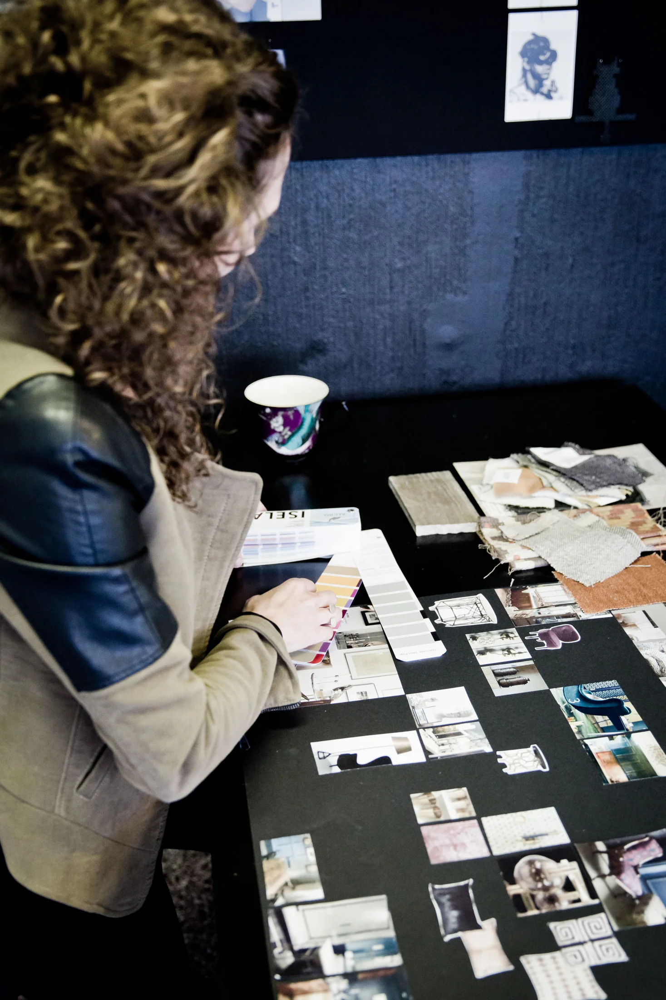
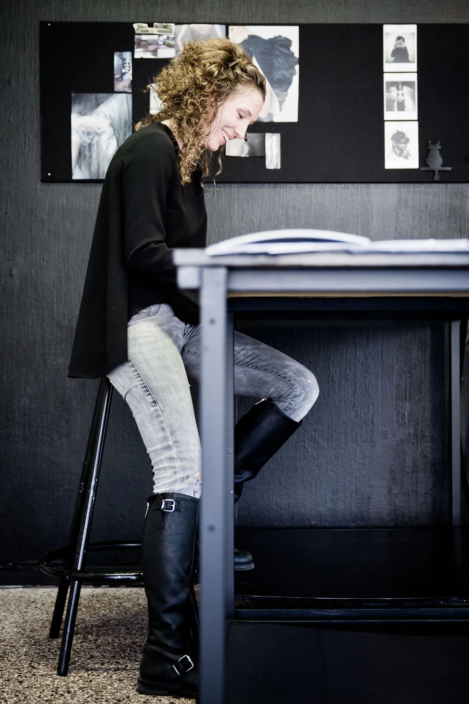

Isela fokuserar på helheten
Om Patricias helhetsarbete med koncept, inredning och samordning av genomförandet.
Läs originaltexten hos ISELAPressmaterial och bakgrund från ISELAs arkiv. Här finns berättelsen om verksamheten, helhetstänkandet och Habitat Design.
Om Patricias helhetsarbete med koncept, inredning och samordning av genomförandet.
Läs originaltexten hos ISELA
Om hur miljöns delar samverkar och varför människan och upplevelsen står i fokus.
Läs originaltexten hos ISELA
ISELA grundades 2006 och arbetar inom inredning, formgivning, trendanalys, konceptuella kläder och föreläsningar.
Läs originaltexten hos ISELAKontakta Patricia för intervjuer, bildförfrågningar eller mer information om ISELAs verksamhet.
Kontakta Patricia